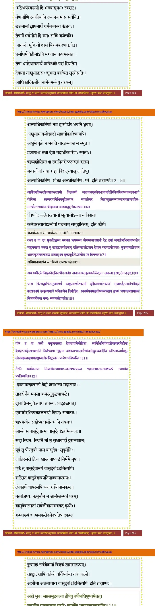
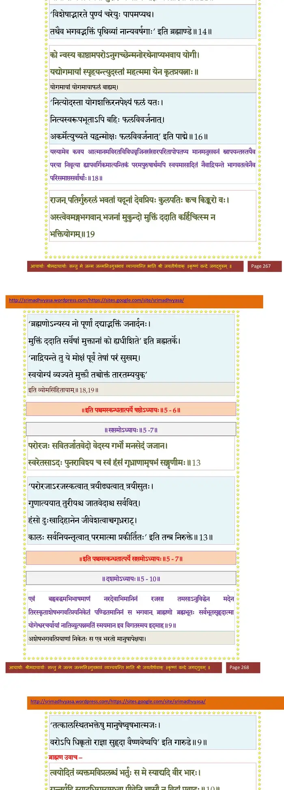

स्कन्ध 5 · अध्याय 6
श्लोक १
राजोवाच–
न नूनं भगवन्नात्मरामाणां योगसमीरितज्ञानावभर्जितकर्मबीजाना-मैश्वर्याणि पुनः क्लेशदानि भवितुमर्हन्ति यदृच्छयोपगतानि ।। १ ।।
न नूनं भगवन्नात्मरामाणां योगसमीरितज्ञानावभर्जितकर्मबीजाना-मैश्वर्याणि पुनः क्लेशदानि भवितुमर्हन्ति यदृच्छयोपगतानि ।। १ ।।
श्लोक २
शुक उवाच–
सत्यमुक्तं किन्त्विह वा एके मनसो विस्रम्भमनवस्थानस्य घटकिराट इव न सङ्गच्छन्ति ।। २ ।।
सत्यमुक्तं किन्त्विह वा एके मनसो विस्रम्भमनवस्थानस्य घटकिराट इव न सङ्गच्छन्ति ।। २ ।।
श्लोक ३
तथा चोक्तम्–
न कुर्यात्कस्यचित्सख्यं मनसि ह्यनवस्थिते ।
यद्विस्रम्भाच्चिराच्चीर्णं चस्कन्द तप ऐश्वरम्।। ३ ।।
न कुर्यात्कस्यचित्सख्यं मनसि ह्यनवस्थिते ।
यद्विस्रम्भाच्चिराच्चीर्णं चस्कन्द तप ऐश्वरम्।। ३ ।।
भागवततात्पर्यनिर्णय
श्लोक ४
नित्यं ददाति कामस्य छिद्रं तमनु येऽरयः ।
योगिनः कृतमैत्रस्य पत्युर्जायेव पुंश्चली।। ४ ।।
योगिनः कृतमैत्रस्य पत्युर्जायेव पुंश्चली।। ४ ।।
भागवततात्पर्यनिर्णय
श्लोक ५
कामो मन्युर्मदो लोभः शोकमोहभयादयः ।
कर्मबन्धश्च यन्मूलः स्वीकुर्यात्को नु तद्बुधः।। ५ ।।
कर्मबन्धश्च यन्मूलः स्वीकुर्यात्को नु तद्बुधः।। ५ ।।
भागवततात्पर्यनिर्णय

श्लोक ६
अथैवमखिललोकपालललामो विलक्षणो जडवदवधूतवेषभाषाचरितै-रविलक्षितभगवत्प्रभावो योगिनां साम्परायविधिमनुशिक्षयन्स्वकलेवरं जिहासुरात्मन्यात्मानमसंव्यवहितमनर्थान्तरभावेनान्वीक्षमाण उपरतानु-वृत्तिरुपरराम ।। ६ ।।
श्लोक ७
तस्य ह वा एवं मुक्तलिङ्गस्य भगवत ऋषभस्य योगमायावसानो देह इमां जगतीमभिमानाभासेन चङ्क्रममाणः ।। ७ ।।
श्लोक ८
एकदा तु काङ्कटकर्णाटकाद्दक्षिणकर्णाटकान् देशान् यदृच्छयोपगतः कुटचाचलोपवने आस्यकृताश्मकवल उन्माद इव मुक्तमूर्द्धजोऽसंवीत एव विचचार ।। ८ ।।
श्लोक ९
अथ समीरवेगविधुतवेणुनिर्घर्षणजातो दावानलस्तद्वनमालेलिहानः सह तेन ददाह ।। ९ ।।
श्लोक १०
यस्य किलानुचरितमुपाकर्ण्य काङ्कटकर्णाटकानां दक्षिणकर्णाटकानां राजाऽर्हतनामोपशिक्ष्य कलावधर्म उत्कृष्यमाणे भवितव्येन विमोहितः स्वधर्मपथमकुतोभयमपहाय कुपथं पाषण्डमसमञ्जसं निजमनीषया मन्दः सम्प्रवर्त्तयिष्यते ।। १० ।।
श्लोक ११
येन ह वा कलौ मनुजापसदा देवमायाविमोहिताः स्वविधि-नियोग-शौचाचारविहीना देवहेलनादीन्यपव्रतानि निजेच्छया गृह्णाना अस्नाना-नाचमनाशौचकेशोल्लुञ्चनादीनि कलिनाऽधर्मबहुलेनोपहतधियो ब्रह्मब्राह्मण-यज्ञपुरुषलोकविदूषकाः प्रायेण भविष्यन्ति ।। ११ ।।
श्लोक १२
ते च ह्यर्वाक्तनया निजलोकयात्रयाऽन्धपरम्परया त एवानाश्वस्था-स्तमस्यन्धे स्वयमेव प्रपतिष्यन्ति ।। १२ ।।
श्लोक १३
अयमवतारो रजसोपप्लुतकैवल्यशिक्षणार्थः तस्यानुगुणान् श्लोकान्गायन्ति ।। १३ ।।
श्लोक १४
अहो भुवः सप्तसमुद्रवत्या द्वीपेषु वर्षेष्वधिपुण्यमेतत् ।
गायन्ति यत्रत्यजना मुरारेः कर्माणि भद्राण्यवतारवन्ति ।। १४ ।।
गायन्ति यत्रत्यजना मुरारेः कर्माणि भद्राण्यवतारवन्ति ।। १४ ।।
भागवततात्पर्यनिर्णय

श्लोक १५
अहोऽनुवंशो यशसाऽवदातः प्रैयव्रतो यत्र पुमान् पुराणः ।
कृतावतारः पुरुषः स आद्यश्चचार धर्मं यदकर्महेतुम्।। १५ ।।
कृतावतारः पुरुषः स आद्यश्चचार धर्मं यदकर्महेतुम्।। १५ ।।
श्लोक १६
को न्वस्य काष्ठामपरोऽनुगच्छेन्मनोरथेनाप्यभवाय योगी ।
यद्योगमायां स्पृहयन्त्युदस्तां महत्तमा येन कृतप्रयत्नाः।। १६ ।।
यद्योगमायां स्पृहयन्त्युदस्तां महत्तमा येन कृतप्रयत्नाः।। १६ ।।
श्लोक १७
इति ह स्म सकललोकदेवब्राह्मणगवां परमगुरोर्भगवत ऋषभाख्यस्य विशुद्धाचरितं पुंसां समस्तदुश्चरिताभिहरणं परममहामङ्गलायनमिदमनु-श्रद्धयोपचितयाऽनुशृृणोत्याश्रावयत्यवहितो भगवति तस्मिन्वासुदेवे एकान्ततो भक्तिरनयोरपि समनुवर्तते ।। १७ ।।
श्लोक १८
यस्यामेव कवय आत्मानमविरतविविधवृजिनसंसारपरितापोपतप्यमान-मनुसवनं स्नापयन्तस्तयैव परया निर्वृत्या ह्यापवर्गिकमात्यन्तिकं परम-पुरुषार्थमपि स्वयमासादितं नैवाद्रियन्ते भागवतत्वेनैव परिसमाप्तसर्वार्थाः ।। १८ ।।
श्लोक १९
राजन्पतिर्गुरुरलं भवतां यदूनां
देवप्रियः कुलपतिः क्व च किङ्करो वः ।
अस्त्वेवमङ्ग भगवान् भजतां मुकुन्दो
मुक्तिं ददाति कर्हिचित्स्म न भक्तियोगम्।। १९ ।।
देवप्रियः कुलपतिः क्व च किङ्करो वः ।
अस्त्वेवमङ्ग भगवान् भजतां मुकुन्दो
मुक्तिं ददाति कर्हिचित्स्म न भक्तियोगम्।। १९ ।।
श्लोक २०
नित्यानुभूतनिजलाभनिवृत्ततृष्णः
श्रेयस्यतद्रचनया चिरसुप्तबुद्धेः ।
लोकस्य यः करुणया भयमात्मलोक-
माख्यान्नमो भगवते ऋषभाय तस्मै।। २० ।।
श्रेयस्यतद्रचनया चिरसुप्तबुद्धेः ।
लोकस्य यः करुणया भयमात्मलोक-
माख्यान्नमो भगवते ऋषभाय तस्मै।। २० ।।
।। इति श्रीमद्भागवते पञ्चमस्कन्धे षष्ठोऽध्यायः ।।